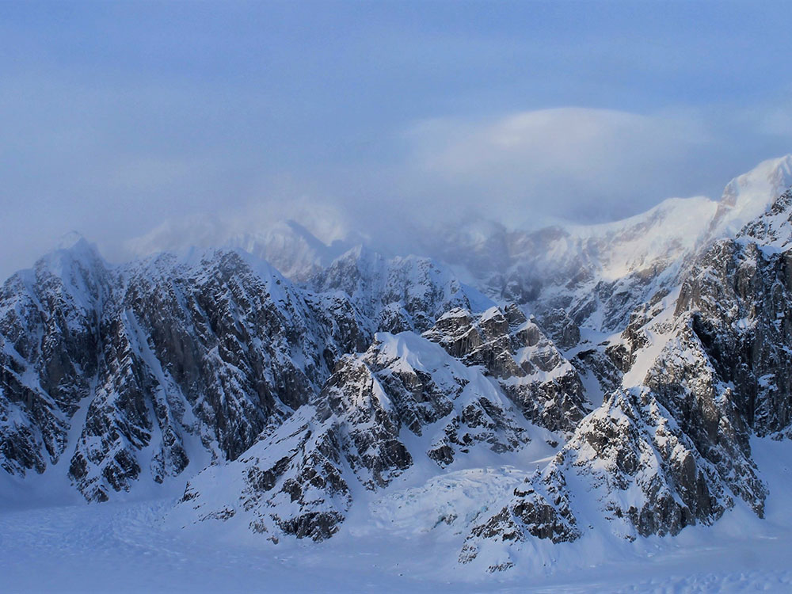
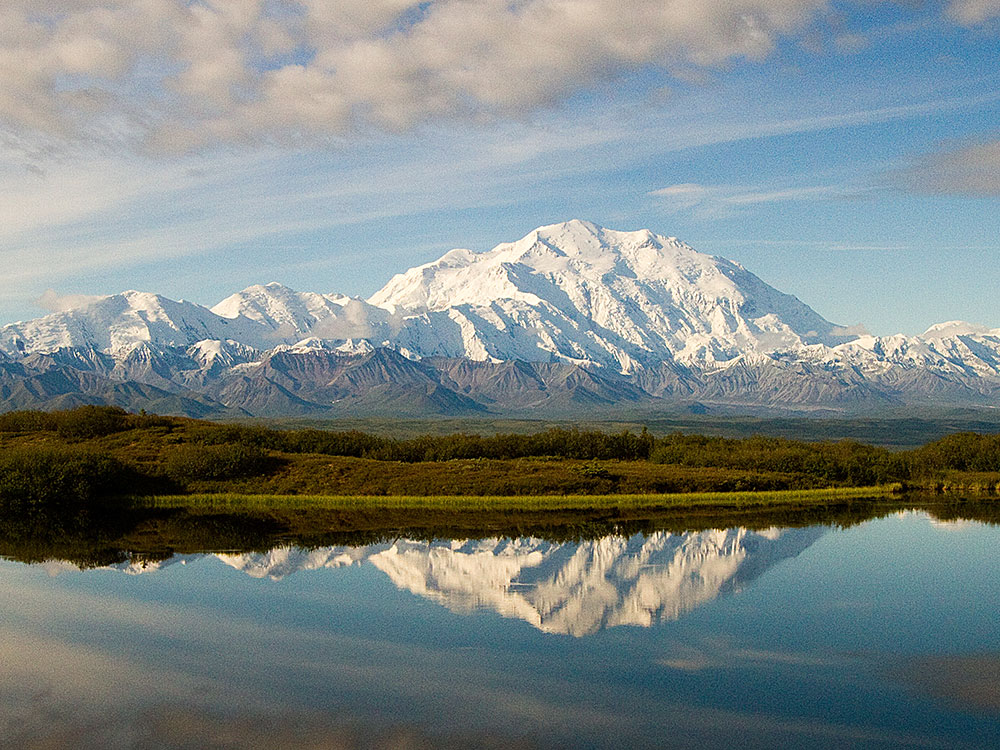

Massive glaciated peak rising above tundra and boreal forest landscapes, forming the highest elevation point on the continent and a centerpiece of a vast protected wilderness.
Visitor services and facilities operate primarily late May through mid-September
Ages 15 and under: Free
Annual pass: $45
Additional fees may apply for tours, buses, and camping
Fairbanks (approx. 125 mi)
Anchorage (approx. 237 mi)
Winter offers limited access and extreme conditions
How to Get There
From Anchorage (240 mi): Take AK-1 N briefly, then merge onto AK-3 N (George Parks Highway) and continue north for about 240 miles to reach the park entrance
Overview
Denali (formerly Mount McKinley) is the highest peak in North America at 20,310 feet, in the Alaska Range in Denali National Park. The Koyukon people have called it Denali ("the high one") for centuries. It was named Mount McKinley in 1896 by a prospector, and its original name was officially restored in 2015. Its base-to-peak rise of about 18,000 feet is the largest of any mountain on land. The first verified ascent was in June 1913 by Hudson Stuck's party.
Highlights
- Geology: a granite pluton pushed up by the collision of the Pacific and North American plates, with two summits (South 20,310 feet and North 19,470 feet)
- Glaciers: five large glaciers, including the Muldrow, Peters, and Kahiltna
- Climbing: about 58 percent of climbers reached the top in 2003, and the mountain has killed close to 100 climbers
- Seeing it: only about 30 percent of visitors see the peak, which is often in clouds, so plan flexible time; flightseeing tours from Talkeetna land on glaciers
Overview
Denali is the highest mountain in North America, rising to 20,310 feet (6,190 meters) above sea level in the Alaska Range. Formerly known as Mount McKinley, Denali is one of the famed Seven Summits and is widely considered one of the most demanding mountaineering objectives in the world. Although the standard route involves relatively limited technical climbing, the mountain's extreme cold, severe storms, massive glacial terrain, altitude, and expedition-style logistics make it a formidable challenge.
Unlike peaks such as Mount Hood or Mount Rainier, Denali is a true high-altitude wilderness expedition. Climbers must haul heavy loads, live on glaciers for several weeks, establish camps, and wait for weather windows while operating in an arctic environment. The mountain's enormous vertical rise and remote location contribute significantly to its difficulty.
Summit Route Options
| Route | Difficulty | Overview |
|---|---|---|
| West Buttress | Strenuous | The standard route used by most climbers and guided expeditions, combining glacier travel, fixed lines, and high-altitude camping. |
| West Rib | Advanced | A steeper and more technical alternative requiring greater snow and ice climbing skills. |
| Cassin Ridge | Expert | One of North America's most celebrated alpine routes involving technical rock, snow, and ice climbing. |
| Muldrow Glacier | Advanced | A historic route requiring complex glacier navigation and extended wilderness travel. |
Typical West Buttress Expedition
- Starting Point: Kahiltna Glacier Base Camp (approximately 7,200 feet).
- Summit Elevation: 20,310 feet.
- Elevation Gain: Approximately 13,000 feet from base camp.
- Duration: Typically 17 to 22 days.
- Route Style: Multi-week expedition with load carries and progressive camps.
- Terrain: Glaciers, fixed ropes, exposed ridges, snow slopes, and high-altitude camps.
- Required Skills: Glacier travel, crampon techniques, ice axe use, crevasse rescue knowledge, and expedition camping.
Most expeditions begin with a ski-equipped bush plane flight from Talkeetna to the Kahiltna Glacier. Climbers establish a series of camps while gradually acclimatizing, carrying loads between camps and building snow walls for protection from frequent storms. Summit day often involves 10-16 hours of climbing and descending from high camp at approximately 17,200 feet.
Typical Camp Progression
| Camp | Approximate Elevation |
|---|---|
| Kahiltna Base Camp | 7,200 Feet |
| Camp 1 | 7,800 Feet |
| Camp 2 | 11,200 Feet |
| Camp 3 | 14,200 Feet |
| High Camp | 17,200 Feet |
| Summit | 20,310 Feet |
Guided Expedition Options
| Experience | Typical Price | Overview |
|---|---|---|
| Standard Guided West Buttress Expedition | $12,500-$13,500 | The most common expedition format lasting approximately three weeks. |
| Low-Ratio Guided Expedition | $14,000-$18,000+ | Smaller guide-to-client ratios and greater individualized support. |
| Denali Prep Course + Expedition | $15,000-$20,000+ | Combines glacier instruction and expedition training with a summit attempt. |
| Independent Expedition | $3,000-$6,000+ | Requires extensive mountaineering experience and self-sufficient logistics. |
The average cost of a guided Denali expedition is approximately $12,500-$14,000 per person. Additional expenses often include transportation to Alaska, equipment purchases, lodging, guide gratuities, and National Park Service fees.
Major Challenges and Hazards
- Extreme Cold with temperatures that can fall far below zero, even during climbing season.
- Severe Storm Systems capable of trapping climbers at camp for days.
- Heavy Loads requiring climbers to carry backpacks while hauling sleds.
- Altitude due to the summit exceeding 20,000 feet.
- Glacier Travel involving crevasses, snow bridges, and rope-team movement.
- Isolation created by the mountain's remote location deep within Alaska.
Best Time to Climb
| Season | Conditions |
|---|---|
| May | Colder temperatures but generally more stable glacier travel conditions. |
| June | Peak climbing season with the highest number of summit attempts. |
| Early July | Warmer conditions but increasing crevasse exposure and weather variability. |
Recommended Experience Level
Denali is not considered a beginner mountaineering objective. Most successful climbers have previous experience on peaks such as Mount Rainier, Mount Baker, Aconcagua, Cotopaxi, or other glaciated and high-altitude mountains. Climbers should be comfortable with glacier travel, winter camping, hauling heavy loads, and operating independently in severe weather conditions. Many guide services recommend prior expedition mountaineering experience before attempting Denali.
This article uses material from the Wikipedia article and official pages for American Alpine Institute, Alaska Mountaineering School, RMI Expeditions, Adventure Consultants, Denali, released under the Creative Commons Attribution-Share-Alike License 3.0.


